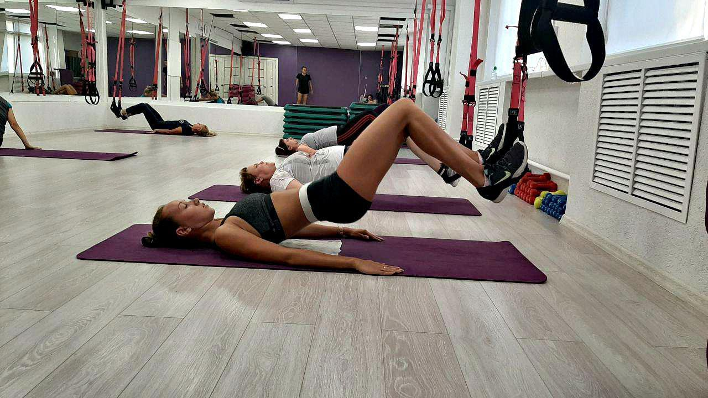

TRX - тренировки
Что такое TRX тренировки? TRX тренировки были придуманы в 1997 году командиром подразделения «Морские котики» Рэнди Хетриком. Его подразделение находилось в тот момент в Юго-Восточной Азии. Командиру нужно было подготовить людей к захвату судна, при чем
тренировки должны были происходить в условиях строгой секретности. Рэнди попались парашютные стропы. Хэтрик смастерил из них «Y»-образную веревочную систему, закрепив один конец в проеме двери. Когда он уволился с военной службы, то
запатентовал свое изобретение и стал продавать TRX тренажеры. Министерство обороны США тоже оценило систему TRX. Они закупили тренажеры и сделали TRX тренировки частью обязательной подготовки военных.
 Польза TRX тренировок. — TRX тренировки позволяют развивать и поддерживать в хорошей форме все группы мышц. — Во время занятия на TRX петлях
развивается гибкость, ловкость, выносливость и вестибулярный аппарат. — TRX тренировки безопасны. Во время занятий вы работаете только с весом собственного тела. — Во время TRX тренировки вы тратите большое количество калорий, что
способствует снижению лишнего веса. — Занятия на петлях TRX благотворно влияют на позвоночник. Поэтому тренировки TRX почти единственный вид спорта, который разрешен людям с травмами позвоночника.
Занятия на петлях TRX в Киеве
Успех TRX тренировок в том, что у этой системы почти нет противопоказаний. TRX тренировки в Киеве могут посещать взрослые и дети. Во время занятий почти нет никакой нагрузки на позвоночник! Для занятий в фитнес- клубах используют TRX петли. TRX петли
это два эластичных ремня, концы которых снабжены удобными рукоятками. Несмотря на простоту TRX тренажеров, петли TRX могут выдерживать до 180 кг.
TRX петли
идеальный тренажер для занятий дома. Вам потребуется лишь закрепить его. Но не торопитесь покупать TRX петли. TRX занятия дадут замечательный результат, если правильно выполнять упражнения. Какая должна быть поза, как
держать руки, как поставить ноги – все это вам должен показать инструктор. Он же должен следить за тем как вы выполняете упражнения, подсказать, когда и как можно увеличить нагрузку, провести разминку перед занятиями. Занятия на петлях
TRX проходят для новичков, для людей среднего уровня физической подготовки и для подготовленных спортсменов. Занятия должны быть безопасными и доставлять пользу и удовольствие. Поэтому мы всегда настаиваем, чтобы перед выбором того
или иного вида тренировок, Тренировки на петлях TRX это способ не только похудеть и поддерживать тело в хорошей физической форме, но и развить ловкость и гибкость.